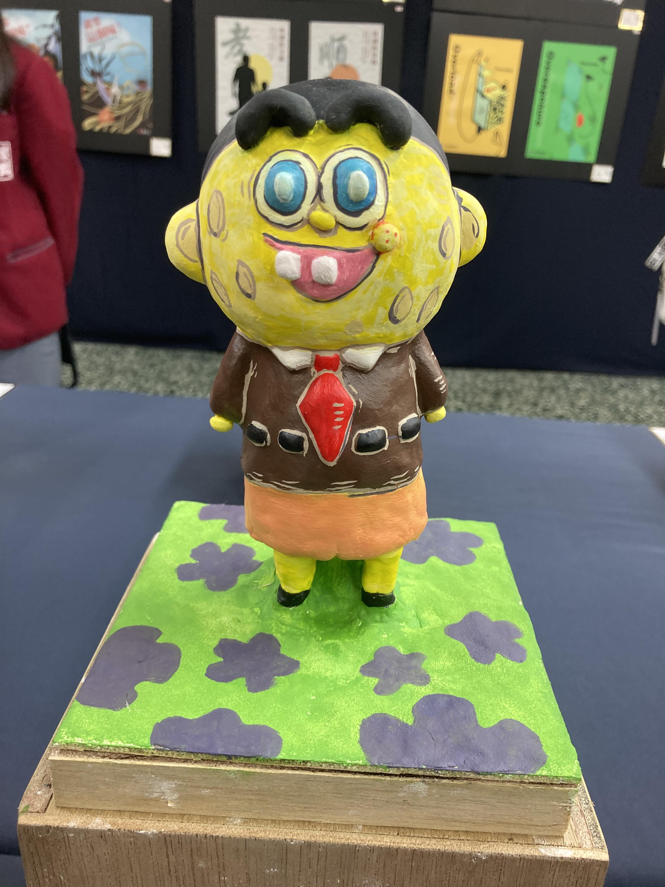

設計能力
結合觀察、想像和視覺整理，
讓每個主題都找到自己的表達方式
01 — ABOUT ME
我相信，每個好的設計，都是從一個小小的好奇開始
你好！我是楊斯珮，目前就讀南臺科技大學，持續探索視覺設計的可能，也喜歡從日常生活裡收集靈感，用色彩、文字和圖像，把想法整理成有溫度的視覺作品
除了平面設計，我也享受插畫、字體、包裝和品牌識別帶來的不同挑戰，對我來說，設計不只是好看，更是把訊息說清楚、讓人留下感受的方式
期待一起創造新作品南臺科技大學就讀中
插畫・字體・音樂
觀察生活裡的小細節
遇到困難，無所畏懼
在探索中找到自己的答案
02 — SKILLS
從第一個構想到最後一個細節，
享受每一次把想法實現的過程
結合觀察、想像和視覺整理，
讓每個主題都找到自己的表達方式
常用工具與熟悉程度可依實際經驗調整
03 — CERTIFICATES
持續累積專業能力，
讓每一次學習都成為創作的養分

TAIWAN TECHNICIAN CERTIFICATE
04 — SELECTED WORKS
一些關於想像力、色彩和不斷嘗試的紀錄
每件作品，都是一次新的練習
 01 / 08
01 / 08
以人物剪影與醒目色彩呈現公益主題，傳遞關懷與倡議訊息
 02 / 08
02 / 08
以幾何字形與鮮明色彩，延伸展覽主視覺與系列應用
 03 / 08
03 / 08
為友善食物與分享概念打造親切的品牌識別和包裝應用
 04 / 08
04 / 08
以手繪線條和明亮色彩，描繪熊貓在竹林裡的可愛日常
 05 / 08
05 / 08
練習從字形結構出發，探索中文字體的個性與節奏

06 / 08把平面角色延伸成立體造型，嘗試以手作呈現創意
 07 / 08
07 / 08
使用 Cinema 4D 練習球鞋造型、材質呈現與立體視覺
 08 / 08
08 / 08
以鉛筆描繪人物神情，練習觀察比例、輪廓與明暗層次
小提醒：上面的 Email 與 Instagram 連結是示範內容，公開網站前請換成你的實際聯絡資訊